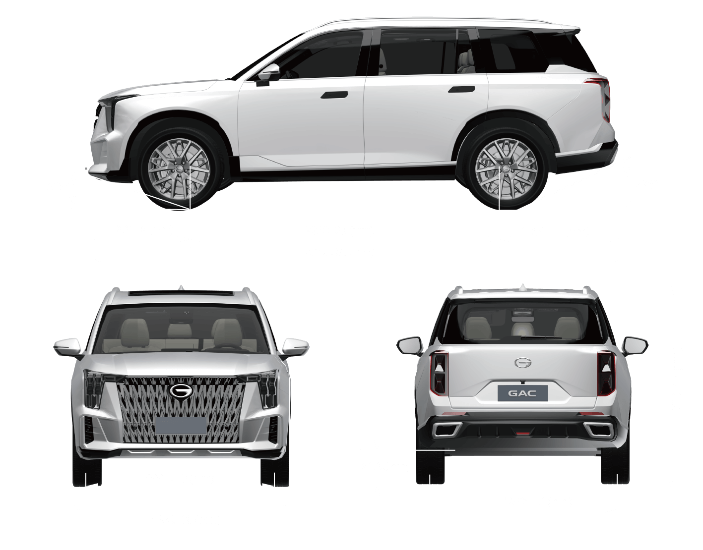

适用于展威翼外观车型
| 项目 | 参数 | ||
|---|---|---|---|
| 数值 | 单位 | ||
| 总长 | 4980±49 | mm | |
| 总宽 | 1950±19 | mm | |
| 总高 | 1780±17 | mm | |
| 轴距 | 2920±29 | mm | |
| 轮距 | 前轮 | 1664±16 | mm |
| 后轮 | 1676±16 | ||
| 前悬 | 944±9 | mm | |
| 后悬 | 1116±11 | mm | |
| 最小离地间隙(满载) | ≥150 | mm | |
| 接近角(满载) | ≥18 | ° | |
| 离去角(满载) | ≥23 | ° | |

适用于展威翼外观车型
| 项目 | 参数 | ||
|---|---|---|---|
| 数值 | 单位 | ||
| 总长 | 5015±50 | mm | |
| 总宽 | 1950±19 | mm | |
| 总高 | 1780±17 | mm | |
| 轴距 | 2920±29 | mm | |
| 轮距 | 前轮 | 1664±16 | mm |
| 后轮 | 1676±16 | ||
| 前悬 | 961±9 | mm | |
| 后悬 | 1134±11 | mm | |
| 最小离地间隙(满载) | ≥150 | mm | |
| 接近角(满载) | ≥18 | ° | |
| 离去角(满载) | ≥23 | ° | |
— 页面到底了 —